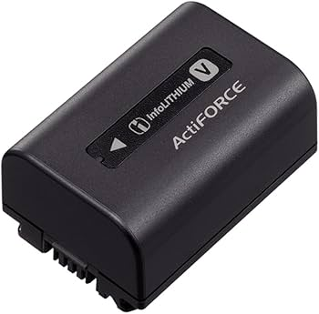

CEA‑G Series CFexpress Type A Memory Card CEA‑GT1920T
Sony’s flagship professional CFexpress Type A memory card designed for cinema cameras and high-end Alpha mirrorless systems. It offers a huge 1920GB capacity, ultra-fast read speeds up to 1800 MB/s and write speeds up to 1700 MB/s, VPG400 certification for stable 4K/8K video recording, and Sony’s TOUGH construction with IP57 dust and moisture resistance. It is ideal for long 4K/120p or RAW recording sessions and high-speed burst photography. In Botswana, the estimated price is around BWP 15,000–17,000 depending on import duties and retailer margins.
High‑speed CFexpress Type A card designed for 4K/8K recording and ultra‑fast data transfer.
CFexpress Type A Card Reader MRW‑G3
a professional USB4 card reader built specifically for Sony CFexpress Type A cards. It supports CFexpress 4.0 media and offers transfer speeds through a USB 40Gbps interface, dramatically reducing backup and editing times for photographers and filmmakers. The compact aluminum body includes heat dissipation for stable operation during large file transfers and works with Windows, macOS, Android, iPadOS, and iOS devices. Estimated Botswana pricing is about BWP 2,000–2,500.
A compact high‑speed card reader optimized for CFexpress Type A and SD cards.
RMT‑VP Wireless Remote Commander
a compact wireless remote and IR receiver kit designed for Sony cameras and camcorders, allowing photographers and videographers to control their devices remotely without touching the camera. It supports both still image and video recording, with features such as shutter release, REC start/stop, zoom control, bulb lock for long exposures, and time code reset. The remote uses infrared (IR) transmission and comes with a 360-degree IR receiver for wider operating angles, making it ideal for wildlife photography, group shots, sports, and vlogging. It weighs about 30g, uses two AAA batteries, and includes a clip stand for mounting on tripods or camera rigs. Internationally, the RMT-VP1K is typically priced around US$70, which converts to approximately BWP 950–1,000 depending on exchange rates and local retailer markups in Botswana.
Wireless control for compatible Sony cameras, ideal for video and long‑exposure shooting.
Portable Data Transmitter PDT-FP1
a specialized professional transmitter for fast image and video delivery directly from cameras using 5G, LTE, Wi-Fi 6E, LAN, or USB connections. It features a 6.1-inch OLED display, Snapdragon 8 Gen 2 processor, dual SIM support, active cooling, 5000mAh battery, HDMI input, Ethernet connectivity, and USB-C PD charging. It is aimed at sports photographers, broadcasters, and news agencies needing rapid live uploads and streaming from the field. In Botswana, expected pricing is roughly BWP 17,000–20,000.
Professional‑grade wireless data transfer for fast, reliable file delivery on‑site.
Wireless Streaming Microphone ECM‑B1
a premium digital shotgun microphone using Sony’s Multi Interface Shoe for cable-free digital audio transfer. It includes eight high-performance microphone capsules with selectable super-directional, uni-directional, and omni-directional pickup modes, making it excellent for interviews, filmmaking, YouTube production, and documentary work. The microphone also reduces vibration noise and eliminates analog signal degradation. The estimated Botswana price is around BWP 5,500–7,000.
A compact digital microphone offering clear audio for streaming, vlogging, and interviews.
DC‑C1 USB Power Delivery (PD) Coupler
a power accessory that allows compatible Sony cameras to run continuously from USB-C Power Delivery sources instead of relying solely on batteries. It is useful for livestreaming, studio shoots, interviews, and extended video recording where uninterrupted power is required. It supports high-power PD charging and works with many Sony Alpha and Cinema Line models. In Botswana, the estimated cost is about BWP 2,000–2,800.
Provides stable USB‑PD power for extended shooting sessions with compatible cameras.
Lavalier Microphone ECM‑L1
a compact professional lavalier microphone designed for interviews, presentations, vlogging, and broadcast work. It delivers clear voice capture with low handling noise and includes a locking 3.5 mm connector for secure use with Sony wireless systems and compatible cameras. Its discreet clip-on design makes it ideal for content creators and TV production. Estimated Botswana pricing is approximately BWP 1,800–2,500.
A discreet clip‑on microphone delivering clear voice recording for interviews and content creation.

Rechargeable Battery Pack — InfoLITHIUM V Series
battery series is widely used in Sony camcorders and some accessories, offering reliable lithium-ion power with remaining battery percentage display support. Popular versions like the NP-FV70A and NP-FV100A provide long recording times for videographers and event shooters. These batteries are known for durability, fast charging support, and stable performance in professional environments. Depending on the model, prices in Botswana generally range from BWP 900–2,200.
Reliable long‑lasting battery performance for Sony camcorders and professional equipment.
Remote Commander RMT‑VP2
an updated Bluetooth wireless remote for Sony cameras, offering responsive shutter triggering, video start/stop, zoom control, focus functions, and customizable controls with improved reliability and range compared to older infrared remotes. It is ideal for tripod shooting, self-portraits, wildlife photography, and professional studio workflows. The estimated Botswana retail price is around BWP 1,500–2,100.
A versatile remote control for Sony cameras and camcorders, ideal for precise shooting.


 Bundle (2 Items).jpeg)